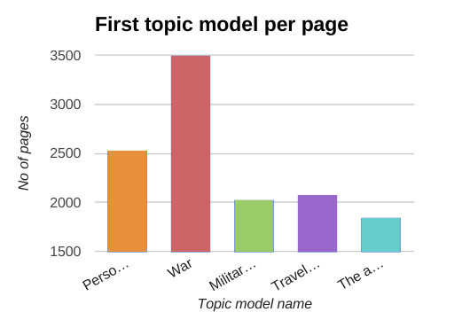
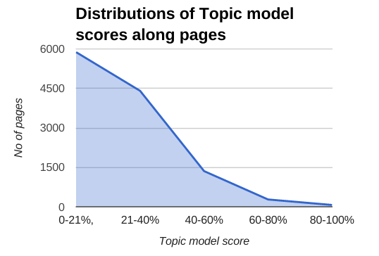

11944 pages
126 Diaries
49 authors
100 years ago
visualization of the State Library of NSW collection [SLNSW collection]
- by Jaume Nualart,PhD Candidate Univ. of Canberra [@jaumetet]
visualization of the State Library of NSW collection [SLNSW collection]
by Jaume Nualart,PhD Candidate Univ. of Canberra [@jaumetet]
Press "ESC" or click [HERE] to start browsing the collection
[afterwards click "about" botton on the left to see this message again]
We present part of the collection "Word War I Diaries" from the State Library of New South Wales (Australia). This site is an interface to that collection developed as part of a research project called "Crossreads" by Jaume Nualart (PhD Candidate at University of Canberra, Faculty of Arts and Design. 2015).
This project proposes a way of exploring and reading the collection based on grouping pages according to the topics they talk about. The analysis has been done with topic models. We are preparing a publication where the process will be explained in detail.
